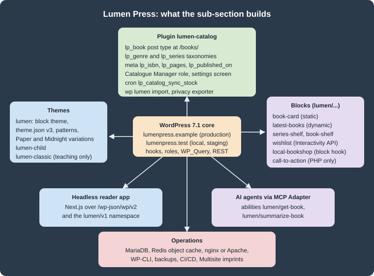

WordPress
|
This content was generated with the assistance of AI and should be verified against the official documentation before being relied on in production. |
WordPress is an open-source content management system written in PHP that stores its content in MySQL or MariaDB and is extended through themes, plugins and blocks. This sub-section of CMS (Content Management System) documents self-hosted WordPress, the software distributed by WordPress.org; the hosted WordPress.com service is a different product and appears only where the difference matters. It covers the whole life of a site: installing and using it, administering the servers it runs on, building block and classic themes, writing plugins and blocks, working with its APIs from PHP, JavaScript and the command line, delivering it through CI/CD and containers, and using it as a headless back end or as a source of tools for AI agents.
The pages are written for four audiences:
-
site owners and editors, who write content, manage users and choose plugins and themes from the dashboard
-
administrators, who install, configure, secure, back up, scale and update WordPress on Apache or nginx
-
theme developers, who build block themes with
theme.json, templates and patterns, or maintain classic themes -
plugin and block developers, who extend WordPress with hooks, custom post types, REST routes, blocks and the Interactivity, Bindings and Abilities APIs
The running scenario: Lumen Press
Every example builds one site for Lumen Press, a fictitious independent publishing house. The local and staging site
is lumenpress.test and production is lumenpress.example. The editorial team has an administrator, the editor
maria.editor, the author tom.author and the catalogue manager lena.catalogue, who holds the custom
lp_catalogue_manager role. Across the sub-section the site gains:
-
a news blog, static pages (About, Contact, Submissions) and a book catalogue: the custom post type
lp_bookunder/books/, the taxonomieslp_genreandlp_series, and the meta fieldslp_isbn,lp_pages,lp_published_onandlp_stock("The Lighthouse Ledger", ISBN 978-1-23456-789-7, is the book most examples use) -
the block theme
lumen(templates, template parts, patterns,theme.jsonversion 3, the "Paper" and "Midnight" style variations and section styles), its child themelumen-child, and a classic themelumen-classicused only to teach classic themes and the migration to blocks -
the plugin
lumen-catalog(namespaceLumen\Catalog, Composer PSR-4 autoloading), with a settings screen, a shortcode, the REST namespacelumen/v1, the WP-CLI commandwp lumen import, a cron job that syncs stock from a fictitious distributor every six hours, a personal-data exporter and translations -
the blocks
lumen/book-card(static),lumen/latest-books(dynamic),lumen/series-shelf(hybrid),lumen/book-shelf(parent with block context),lumen/wishlist(Interactivity API),lumen/local-bookshop(a hooked block) andlumen/call-to-action(registered from PHP only), plus a Block Bindings source for the book meta -
operations:
wp-envand Docker Compose locally, staging and production servers, a Redis object cache, nginx, backups, and a Multisite variant for the imprints Lumen Kids and Lumen Noir -
a Next.js reader app over the REST API, and the abilities
lumen/get-bookandlumen/summarize-bookexposed to AI agents through the MCP Adapter

Pages link to each other instead of repeating set-up steps: the standard local stack is described once in Local Development Environments, and the database a fresh site creates is inspected in Database Schema.
Version baseline
The examples were tested on WordPress 7.1.3, released on 2026-10-06. WordPress 7.1.4, a security-only release published on 2026-10-28, is the current release and the one to run in production; it changes no API, so every example applies to it unchanged. WordPress 7.2 is in beta and planned for 2026-12-08; where a page mentions a 7.2 feature (such as the Secrets API or the "Ipsum" default theme) it is labelled as upcoming. In WordPress numbering, X.Y together is a major release (6.9, 7.0 and 7.1 are consecutive majors) and Z is a maintenance or security release; see Versions and Release Cycle.
The rest of the baseline:
| Component | Version used in this sub-section |
|---|---|
PHP |
7.4 minimum (since WordPress 7.0); 8.3 or later recommended; the examples run on PHP 8.4 |
Database |
MariaDB 11.8 in the examples; see Requirements and Hosting for the differing official minimums |
|
Version 3, schema |
|
|
Gutenberg plugin |
24.2.0, for features not yet merged into core |
|
37.0.0 (unit tests run on Vitest since 36) |
|
5.0.0 |
|
12.0.0 |
|
8.0.0 |
WP-CLI |
2.12.0 |
WordPress Coding Standards |
3.4.1 |
Versions, release dates and links on these pages were checked on 2026-10-28. Older advice found in books, tutorials and
answers often predates block themes, theme.json, bcrypt password hashing (6.8) or the PHP 7.4 minimum;
Outdated Advice lists the corrections in one place.
What’s covered
The groups below follow the navigation. The last three pages gather material from the whole sub-section.
Summary pages
-
Outdated Advice: claims in older books and tutorials that no longer hold for WordPress 7.1, each with the current behaviour and the page that explains it
-
Comparison & Decision Guide: block or classic theme, plugin or theme code, static or dynamic block, REST or GraphQL, traditional or headless, single site or Multisite, and similar choices side by side
-
Cheat Sheet (PDF): a one-page summary of the sub-section to download and print
Reading path
Pick the goal closest to yours and read the pages in order; each path assumes only the pages before it.
The sub-section, at a glance:
Administer servers
-
Cloud Reference Architecture and Managed Database: RDS and Aurora
-
Media: S3 Offload, EFS and CloudFront and Object Cache, Sessions and Cron in a Cluster
-
EKS Infrastructure with OpenTofu and Deploying on EKS with Helm
-
Releases, Upgrades and Autoscaling on Kubernetes, Migrating from a Single Server and Google Cloud, Azure and Alternatives to Kubernetes
Build a theme
-
For an existing classic theme: Classic Theme Anatomy and The Loop, then Hybrid Themes and Migration to Block Themes
Build plugins and blocks
Related material on this site
WordPress shares its language, database and infrastructure with other sections of this site. The pages below go deeper into topics these pages only touch. Online shops built on WooCommerce belong to the WooCommerce sub-section of E-commerce rather than to this sub-section.
| Page | Why it is relevant here |
|---|---|
The language of core, themes and plugins |
|
Background for Composer-Based WordPress and PSR-4 autoloading in |
|
PHPUnit itself, before the WordPress test suite in Testing |
|
PHPStan and Rector beyond the WordPress rulesets |
|
The PHP side of Performance and Caching |
|
|
|
A PHP framework, for applications that outgrow a CMS |
|
The SQL behind |
|
The persistent object cache used by Lumen Press |
|
Images, Compose and volumes used by the local and container pages |
|
Deployments, storage and ingress for the Kubernetes variant |
|
Single sign-on and token flows beyond application passwords |
|
Load-testing a site before scaling it |
|
The library the block editor and every block’s editor script are built with |
|
The framework of the Lumen Press headless reader app |
|
Playwright, which the WordPress end-to-end utilities build on |
|
WCAG background for accessible themes and blocks |
|
Image formats, responsive images and lazy loading |
|
Cross-origin REST requests from a headless front end |
|
The protocol behind the MCP Adapter |
|
Where front-end frameworks fit next to a CMS |
|
Server-side frameworks as an alternative to a CMS |
Bibliography
Every source below was consulted while preparing this sub-section. Each entry links to its official website, and the
books link to their publisher’s page. Individual pages list the subset they derive from under their own References
heading. An entry marked "(unverified)" could not be opened from the authoring environment (the site refused automated
requests); the link is the one the official documentation uses, but it was not re-checked on 2026-10-28.
Books
These books were compared with the official documentation. Where they disagree with the current documentation, the official documentation wins, and the pages say so in their own words.
-
Lisa Sabin-Wilson, WordPress All-in-One For Dummies, 5th Edition (John Wiley & Sons, 2024), ISBN 978-1-394-22538-5 (print), 978-1-394-22539-2 and 978-1-394-22540-8 (e-book)
-
Sivaraj Selvaraj, Pro WordPress: Mastering the Techniques for Building, Securing and Scaling Websites (Apress, 2024), ISBN 979-8-8688-0970-5 (print), 979-8-8688-0971-2 (e-book), DOI 10.1007/979-8-8688-0971-2
-
Daniel Bisett and Tricia Elizabeth Ulberg, Ultimate WordPress Handbook: An Essential Guide to Designing Stunning WordPress Websites, Driving Traffic, and Boosting Revenue (Orange Education Pvt Ltd, AVA, 2024), ISBN 978-93-48107-11-4 (print), 978-93-48107-20-6 (e-book)
Official documentation
WordPress.org user documentation
WordPress.org releases, news and project pages
Advanced Administration Handbook
-
Advanced Administration Handbook: Before You Create A Network
-
Advanced Administration Handbook: Creating Database for WordPress
-
Advanced Administration Handbook: Giving WordPress Its Own Directory
-
Advanced Administration Handbook: Install WordPress at popular providers
-
Advanced Administration Handbook: Installing WordPress in your language
-
Advanced Administration Handbook: Multisite Network Administration
-
Advanced Administration Handbook: Running a Development Copy of WordPress
-
Advanced Administration Handbook: WordPress Multisite / Network
-
Advanced Administration Handbook: WordPress Multisite Domain Mapping
Plugin Handbook
-
Plugin Handbook: Adding the Personal Data Eraser to Your Plugin
-
Plugin Handbook: Adding the Personal Data Exporter to Your Plugin
-
Plugin Handbook: Hooking WP-Cron Into the System Task Scheduler
-
Plugin Handbook: Planning, Submitting, and Maintaining Plugins
-
Plugin Handbook: Privacy related options, hooks and capabilities
-
Plugin Handbook: Suggesting text for the site privacy policy
Block Editor Handbook and schemas
-
Block Editor Handbook: @wordpress/create-block-interactive-template
-
Block Editor Handbook: @wordpress/dependency-extraction-webpack-plugin
-
Block Editor Handbook: Curating the editor experience with theme.json
-
Block Editor Handbook: Static or Dynamic rendering of a block
-
Block Editor Handbook: Understanding global state, local context, derived state and config
-
Block Editor Handbook: Working with JavaScript for the Block Editor
REST API Handbook
Playground documentation
WordPress Developer Blog
-
WordPress Developer Blog: A walk-through tutorial on using Create Block Theme plugin
-
WordPress Developer Blog: An introduction to overrides in Synced Patterns
-
WordPress Developer Blog: Build your first AI-powered WordPress plugin
-
WordPress Developer Blog: From Abilities to AI Agents: Introducing the WordPress MCP Adapter
-
WordPress Developer Blog: How to register block variations with PHP
-
WordPress Developer Blog: How to register custom font collections for the Font Library
-
WordPress Developer Blog: How to use DataForm to create plugin settings pages
-
WordPress Developer Blog: How WordPress 6.9 gives forms a theme.json makeover
-
WordPress Developer Blog: Introducing Block Bindings, part 1: Connecting custom fields
-
WordPress Developer Blog: Introducing Block Bindings, part 2: Working with custom binding sources
-
WordPress Developer Blog: Introducing the WordPress Abilities API
-
WordPress Developer Blog: Mastering theme.json: you might not need CSS
-
WordPress Developer Blog: Registering block templates via plugins in WordPress 6.7
-
WordPress Developer Blog: Streamlining block theme development with WordPress Playground and GitHub
-
WordPress Developer Blog: Using Data Views to display and interact with data in plugins
-
WordPress Developer Blog: What’s new for developers? (August 2026)
Code Reference
Functions
Hooks
Classes and methods
Make WordPress
Core team: dev notes, field guides and Trac
-
Make WordPress Core: A unified public exposure flag for abilities in WordPress 7.1
-
Make WordPress Core: Abilities API improvements in WordPress 7.1
-
Make WordPress Core: Application Passwords Integration Guide
-
Make WordPress Core: Auto Sizes for Lazy Loaded Images in WordPress 6.7
-
Make WordPress Core: Automatic conversion of HEIC images to JPEG in WordPress 6.7
-
Make WordPress Core: Block Bindings improvements in WordPress 6.9
-
Make WordPress Core: Block Bindings: Improvements to the Editor Experience in 6.7
-
Make WordPress Core: Block-based Widgets Editor in WordPress 5.8
-
Make WordPress Core: Changes to prevent search engines indexing sites
-
Make WordPress Core: Changes to the Interactivity API in WordPress 7.0
-
Make WordPress Core: Client-side Abilities API in WordPress 7.0
-
Make WordPress Core: Client-Side Media Processing in WordPress 7.1
-
Make WordPress Core: Consistent navigation in WordPress 7.1 with persistent toolbar
-
Make WordPress Core: Controlling plugin and theme auto-updates UI in WordPress 5.5
-
Make WordPress Core: Custom CSS for Individual Block Instances in WordPress 7.0
-
Make WordPress Core: Customizable Navigation Overlays in WordPress 7.0
-
Make WordPress Core: Customize Changesets Technical Design Decisions
-
Make WordPress Core: Editor components updates in WordPress 7.1
-
Make WordPress Core: External Library updates in WordPress 5.5
-
Make WordPress Core: Filtering registered abilities with wp_get_abilities() in WordPress 7.1
-
Make WordPress Core: Filtering Site Editor Screens in WordPress 7.1
-
Make WordPress Core: Font Library update: storage of font files
-
Make WordPress Core: Framework for storing revisions of post meta in 6.4
-
Make WordPress Core: I18N Improvements in 6.5 (Performant Translations)
-
Make WordPress Core: Iframed editor changes in WordPress 7.1
-
Make WordPress Core: Image performance enhancements in WordPress 6.3
-
Make WordPress Core: Improvements to WP_Query performance in 6.1
-
Make WordPress Core: Interactivity API best practices in 6.8
-
Make WordPress Core: Introducing admin notice functions in WordPress 6.4
-
Make WordPress Core: Introducing auto-updates interface for Core major versions in WordPress 5.6
-
Make WordPress Core: Introducing Block Hooks for dynamic blocks
-
Make WordPress Core: Introducing handling of big images in WordPress 5.3
-
Make WordPress Core: Introducing Plugin Dependencies in WordPress 6.5
-
Make WordPress Core: Introducing the AI Client in WordPress 7.0
-
Make WordPress Core: Introducing the Connectors API in WordPress 7.0
-
Make WordPress Core: Introducing Update URI plugin header in WordPress 5.8
-
Make WordPress Core: Miscellaneous Editor changes in WordPress 6.4
-
Make WordPress Core: Miscellaneous Editor Changes in WordPress 7.1
-
Make WordPress Core: More efficient block type registration in 6.8
-
Make WordPress Core: New block type registration APIs to improve performance in WordPress 6.7
-
Make WordPress Core: New execution lifecycle filters for the Abilities API in WordPress 7.1
-
Make WordPress Core: New Plugin Template Registration API in WordPress 6.7
-
Make WordPress Core: New wp_get_environment_type() function in WordPress 5.5
-
Make WordPress Core: New XML Sitemaps Functionality in WordPress 5.5
-
Make WordPress Core: Options API: Disabling autoload for large options
-
Make WordPress Core: Pattern Overrides in WP 7.0, support for custom blocks
-
Make WordPress Core: Plugin activation hooks no longer fire for updates
-
Make WordPress Core: Proposal: A Secrets API for WordPress 7.2
-
Make WordPress Core: Pseudo and custom style states in WordPress 7.1
-
Make WordPress Core: Pseudo-element support for blocks and their variations in theme.json (7.0)
-
Make WordPress Core: Real-time collaboration will not ship in WordPress 7.0
-
Make WordPress Core: Registering and rendering SVG icons in WordPress 7.1
-
Make WordPress Core: Registering scripts with async and defer attributes in WordPress 6.3
-
Make WordPress Core: Responsive block styles and configurable viewports in WordPress 7.1
-
Make WordPress Core: REST API Batch Framework in WordPress 5.6
-
Make WordPress Core: Robots API and max-image-preview directive in WordPress 5.7
-
Make WordPress Core: Rollback for failed manual plugin and theme updates (6.3)
-
Make WordPress Core: The Classic block stays in the inserter for WordPress 7.1
-
Make WordPress Core: Updates to the Interactivity API in 6.6
-
Make WordPress Core: WordPress 5.3 Site Admin Email Verification Screen
-
Make WordPress Core: WordPress 6.8 will use bcrypt for password hashing
-
Make WordPress Core: WP 5.3 introduces new functions to add UGC attribute to links
-
WordPress Trac #62509: Style Book for classic themes (6.8) (unverified)
-
WordPress Trac: ticket 34336, XML-RPC multicall authentication failures (unverified)
Source repositories and packages
WordPress core source
-
WordPress 7.1.3: wp-includes/block-bindings/pattern-overrides.php
-
WordPress 7.1.3: wp-includes/block-supports/auto-register.php
-
WordPress 7.1.3: wp-includes/block-supports/block-style-variations.php
-
WordPress 7.1.3: wp-includes/class-wp-block-patterns-registry.php
-
WordPress 7.1.3: wp-includes/class-wp-theme-json-resolver.php
-
wordpress-develop 7.1.3: package.json (pinned Gutenberg commit)
-
wordpress-develop 7.1.3: tests/phpunit/includes/abstract-testcase.php
-
wordpress-develop: Database: Remove support for the mysql extension
-
wordpress-develop: unsigned ID columns in Multisite tables (6.9)
Gutenberg repository
Other WordPress and WP-CLI repositories
Ecosystem
Plugin and theme directory listings
WordPress ecosystem projects
PHP, Composer and testing tools
Databases, web servers and operations
Front end, search and web standards
Cloud deployment at scale
These sources were consulted for the pages of the Cloud Deployment at Scale group; each entry links to its official website.
Amazon Web Services
-
Amazon CloudFront: restricting access to an Amazon S3 origin
-
Amazon EKS User Guide: Create an IngressClass to configure an Application Load Balancer
-
Amazon ElastiCache User Guide: Authenticating with the Valkey and Redis OSS AUTH command
-
Amazon ElastiCache User Guide: Engine versions and upgrading
-
Amazon RDS User Guide: Password management with Secrets Manager
-
Amazon RDS User Guide: Restoring a DB instance to a specified time
-
Using SSL/TLS to encrypt a connection to a DB instance or cluster